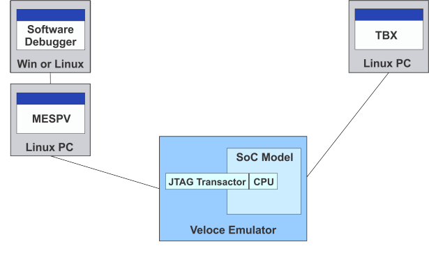

The traditional Sourcery Probe debug environment is comprised of debugger software running on a PC, connected to a hardware probe via an Ethernet or USB connection. The Sourcery Probe connects to the system under test via JTAG (plus some dedicated special function I/O signals). The debugger software provides the user interface, and implements high level debug features using debug services provided by the Sourcery Probe.
In the Virtual Sourcery Probe debug environment, the Sourcery Probe software runs on a PC instead of dedicated probe hardware, providing an interface to the virtual JTAG port of a processor model running on a hardware emulator. This enables software debugging to begin on the actual hardware design long before any SOC devices are produced, allowing hardware and software to be brought up together. The advantages of hardware/software co-debug include:
The Virtual Sourcery Probe uses a JTAG Transactor API to access the JTAG interface of a hardware simulation/emulation model of the Design Under Test (DUT). The JTAG Transactor option for the Veloce emulator interfaces to the virtual JTAG port using TestBench Xpress (TBX). It has a HDL part written in System Verilog, which is integrated into the hardware design, and a SW part written in C++ to which the virtual probe connects.
Figure 7‑1. Virtual Sourcery Probe Development Environment 